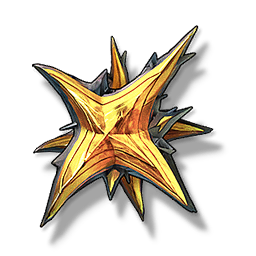

FF Whisperin Core
Development Materials

Used for weapon breakthrough, Resonator ascension, and skill upgrade.
The Tacet Core structure of the special Whisperin Tacet Discord, the interlaced and complex star structure contains a familiar and unfamiliar frequency energy, it seems to imply that the human understanding of itself is just like this.